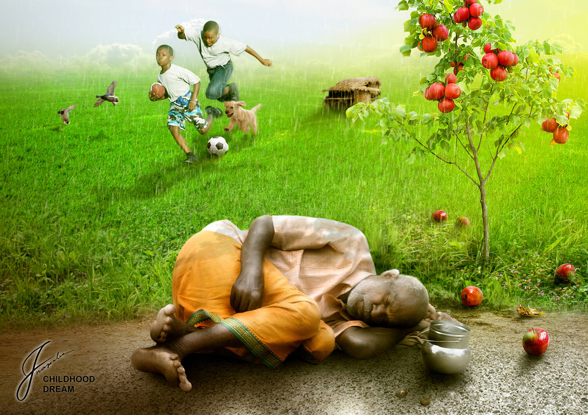
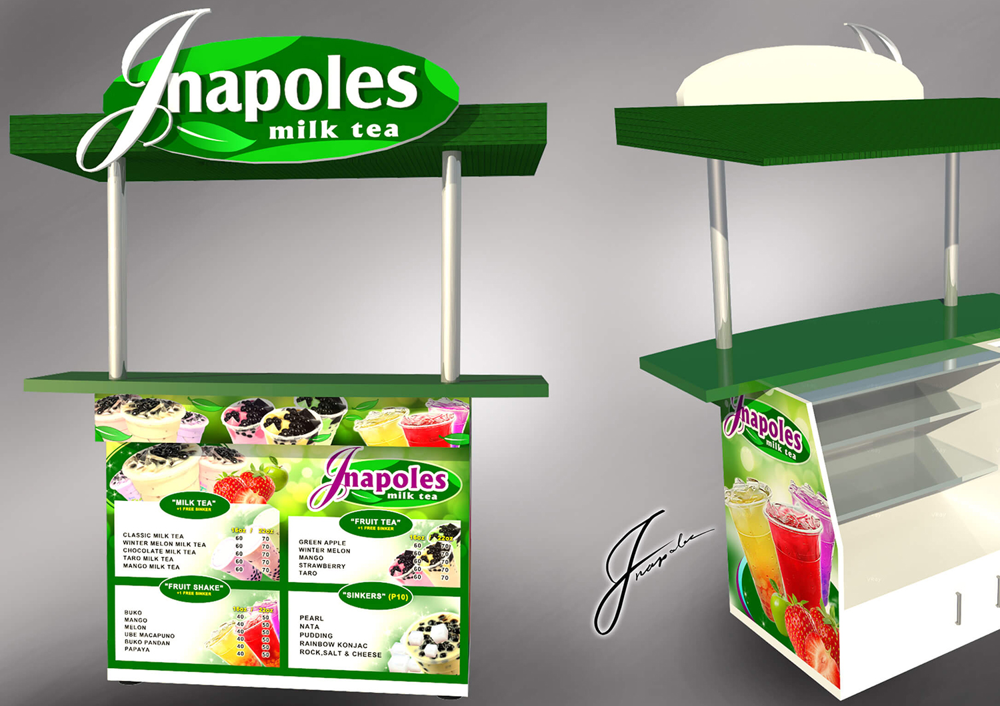
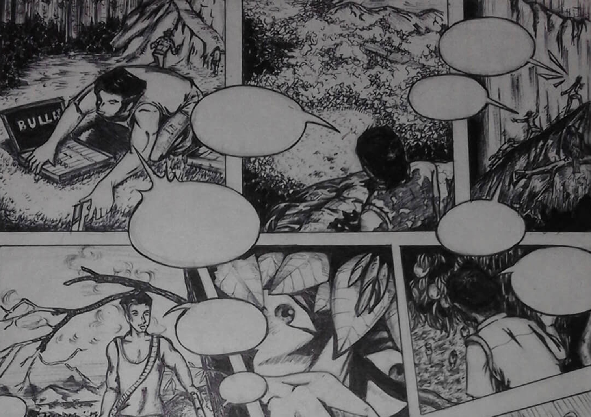

Photo manipulation involves transforming or altering a photograph using various methods and techniques to achieve desired results. Some photo manipulations are considered skillful artwork while others are frowned upon as unethical practices, especially when used to deceive the public, such as that used for political propaganda, or to make a product or person look better. Depending on the application and in tent, some photo manipulations are considered an art form because it involves the creation of unique images and in some instances, signature expressions of art by photographic artists.
In 3D computer graphics, 3D modeling (or three-dimensional modeling) is the process of developing a mathematical repre sentation of any three-dimensional surface of an object (either inanimate or living) via specialized software. The product is called a 3D model. It can be displayed as a two-dimensional image through a process called 3D rendering or used in a computer simulation of physical phenomena. The model can also be physically created using 3D printing devices. Models may be created automatically or manually. The manual mode ling process of preparing geometric data for 3D computer graphics is similar to plastic arts such as sculpting.
Drawing is one of the major forms of expression within the visual arts. It is generally concerned with the marking of lines and areas of tone onto paper/ other material, where the accurate representation of the visual world is expressed upon a plane surface. Traditional drawings were monochrome, or at least had little colour, while modern colored-pencil drawings may approach or cross a boundary between drawing and painting. In Western terminology, drawing is distinct from painting, even though similar media often are employed in both tasks. Dry media, normally associated with drawing, such as chalk, may be used in pastel paintings.
------- My Drawing, 3D modeling and 2D animation videos -------
“ Design is one of the few disciplines that is a science as well as an art. Effective,
meaningful design requires intellectual, rational rigor along with the ability to elicit
emotions and beliefs. Thus, designers must balance both the logic and lyricism of
humanity every time they design something, a task that requires a singularly myste-
rious skill.”
“ Design is all around us, in our homes, in buildings, architecture, landscaping,
products, movies, television, and much more. The world could not function without
designers and artists. Without us, everything would be plain and boring, without
imagination or inspiration.
“ Design is a plan for arranging elements in such a way as best to accomplish a
particular purpose. Before you set out to create a design, ask yourself what the end
goal is. Then create a design that helps that goal be met.
Copyright © 2017
Developed by Jnapoles